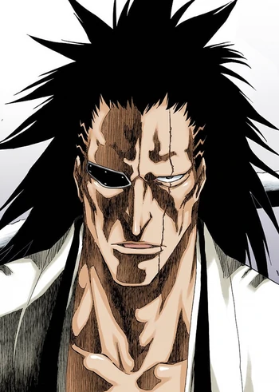
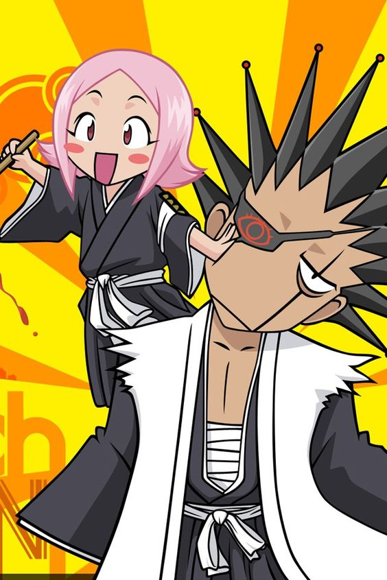
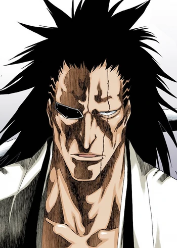

Кенпачи Зараки
Kапитан одиннадцатого отряда Готея 13. Одиннадцатый человек, носящий это звание и титул Кенпачи.[3] Его лейтенант — Иккаку Мадараме.



Kапитан одиннадцатого отряда Готея 13. Одиннадцатый человек, носящий это звание и титул Кенпачи.[3] Его лейтенант — Иккаку Мадараме.
Кенпачи известен как очень сильный боец, который стремится стать ещё сильнее. Зараки чувствует себя счастливым, только когда сражается. Он специально ограничивает свои силы и дает противнику фору, для того чтобы упиваться битвой как можно дольше. По его мнению, боль и смерть — это лишь цена, которую платят за наслаждение битвой. Несмотря на свою склонность к жестокости, Кенпачи обычно останавливает бой, если его противник серьёзно ранен и перестает сопротивляться, утверждая, что он не заинтересован в битве, где враг заведомо проиграл. Тем не менее, он не колеблясь убивает своего оппонента, если тот не собирается сдаваться, как это было с Канаме Тоусеном и Нойтрой Джилгой. Кенпачи придаёт большое значение своему имени. Титул Кенпачи говорит о его невероятной мощи. Во время битвы с Ичиго Куросаки Кенпачи вспоминает о том, как больно не иметь имени, как он сам прожил свои ранние годы безымянным. Это заставляет Зараки чувствовать себя виноватым за то, что его меч до сих пор не имеет собственного имени. После этого Кенпачи пытается узнать личность своего меча. Очевидно, что в сражениях Кенпачи иногда противоречит собственной логике. С одной стороны, он стремится увеличить свою собственную силу. С другой стороны, Кенпачи запечатывает часть своей силы, чтобы наслаждаться битвой настолько долго, насколько это возможно. Несмотря на то, что он живёт ради битв, Зараки не лишен нормальных эмоций. Кенпачи и его лейтенант, Ячиру, близки ещё с момента первой встречи и относятся друг к другу, как отец и дочь (что делает Ячиру одной из немногих людей, которыми он дорожит). Несмотря на все это, как утверждают несколько человек, если кто-то из его подчиненных вмешается в его битву, то он убивает сначала их. Зараки выказывает уважение лишь тем противникам, которые могут его победить или заставить подойти к пределу силы. Впервые после сражения с Ячиру Уноханой Кенпачи проиграл в бою с Ичиго Куросаки, хотя тот, со своей стороны, тоже считает себя проигравшим. Кенпачи при встрече всегда вызывает его на матч-реванш, но неизменно получает отказ. Ичиго не разделяет мнения капитана одиннадцатого отряда о наслаждении битвами и потому не будет сражаться с ним повторно без веской причины. Тем не менее, Кенпачи все ещё намерен бросить ему вызов: Зараки очевидно показал это, когда помог Ичиго в битве против связанных, утверждая, что так он сделает Ичиго сильнее для «их последующей битвы» Кенпачи глубоко уважает Унохану. Она — единственный человек, которым он когда-либо восхищался. Сражаясь с ней, он впервые испытал наслаждение от боя, она была единственной, кто мог противостоять ему.Думая, что умрёт, так и не победив её, Кенпачи плачет. Однако, когда он одерживает верх над Уноханой, он кричит и просит её не умирать.

Кенпачи чередует удары мечом и голыми руками
Эксперт рукопашного боя: Несмотря на то, что Зараки предпочитает сражаться на мечах, он продемонстрировал свои навыки боя без оружия. Он без особых проблем способен парировать атаки противника одной рукой, наносить мощные удары, а также непринуждённо швырять оппонентов в разные стороны.[?] Кенпачи, даже уставший и раненый в бою, комбинируя фехтование и рукопашный бой, способен с лёгкостью расправиться с несколькими солдатами из ОТО, который, в частности, требует от своих воинов отличного владения Хакудой.[43]
Кенпачи выплёскивает огромное количество духовной энергии в одном ударе
Несовершенный контроль над духовной силой: Как признаёт сам Кенпачи, он очень плохо контролирует свою духовную силу, поэтому ему приходится полагаться на повязку, чтобы удерживать её на более умеренном уровне. Тем не менее, он может сознательно использовать её для достижения различных эффектов. Например, он может заставить окружающих почувствовать паралич и смятение.[52] Когда он просто высвобождает свою духовную энергию, она способна отбросить от него слабых противников и произвести серьёзные разрушения вокруг Кенпачи.[?] Подобным образом он может отразить атаки противника.[53] Также он способен использовать базовые приемы синигами, например, стоять на воздухе.[54]
Энергетическая волна: Ударив мечом в землю, Кенпачи может запустить волну жёлтой энергии, которая способна пронестись на несколько метров и нанести противнику урон.
Энергетическая волна: Ударив мечом в землю, Кенпачи может запустить волну жёлтой энергии, которая способна пронестись на несколько метров и нанести противнику урон.